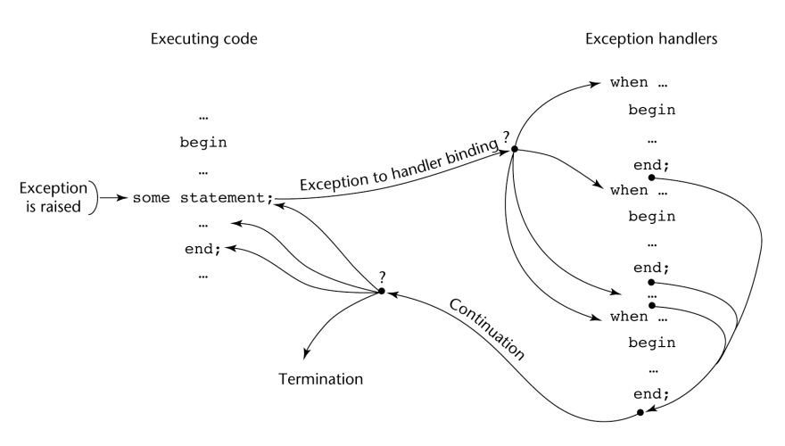

when exception_choice{|exception_choice} => statement_sequence
exception_name | others
ecxeption_name_list : exception;
raise [exception_name]
(exception-name no es requerido si esta en un manejador, en este caso propaga la misma excepción)
pragma SUPRESS(exception_list)
try {
-- codigo en el que se espera surga una excepción
}
catch (formal parameter) {
-- codigo del controlador
}
...
catch (formal parameter) {
-- codigo del controlador
}
catchcatch es el nombre de todos los controladores – Es un nombre
sobrecargado, por lo tanto los parámetros deben ser únicos.trow [expression];trow sin operandos sólo puede aparecer en un controlador;
cuando aparece, simplemente relanza la excepción, que a
continuación se maneja en otro lado.ThrowableThrowable:
Error
Excepción
IOException y
RuntimeException (por ejemplo,
ArrayIndexOutOfBoundsException y NullPointerExceptionThrowablethrow, al igual que en C++,
pero con frecuencia incluye el operador new para crear el objeto,
como en: throw new MiExcepción ();throw en el controlador (un controlador también podría lanzar una excepción diferente)try,
la búsqueda continúa en el try más cercano que lo contenga, etc.main), el programa termina.try
Exception classtry.error y RuntimeException y todos sus
descendientes se llaman excepciones no chequeadasthrow , othrows
que las que el método sobrescribethrows tiene tres alternativas para hacer frente a esa excepción:
throwsthrows y no manejarlafinallytry
finally {
...
}
trytry con una cláusula finally pueda ser usada
fuera del manejo de excepción:
try {
for (index = 0; index < 100; index++) {
…
if (…) {
return;
} //** end of if
} //** end of try clause
finally {
…
} //** end of try construct
AssertionErrorJTextFieldJRadioButtonActionEventItemEventpTextEventComponentEventKeyEventMouseEventMouseMotionEventFocusEvent